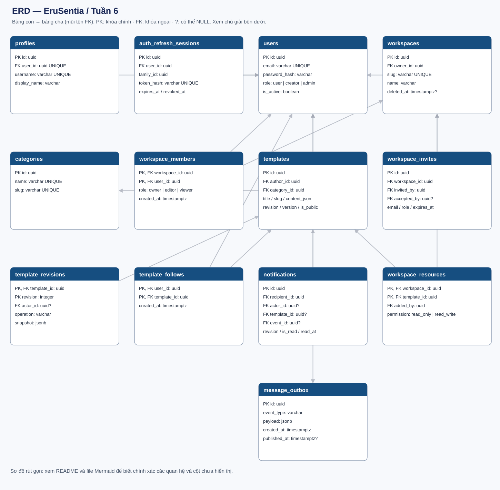
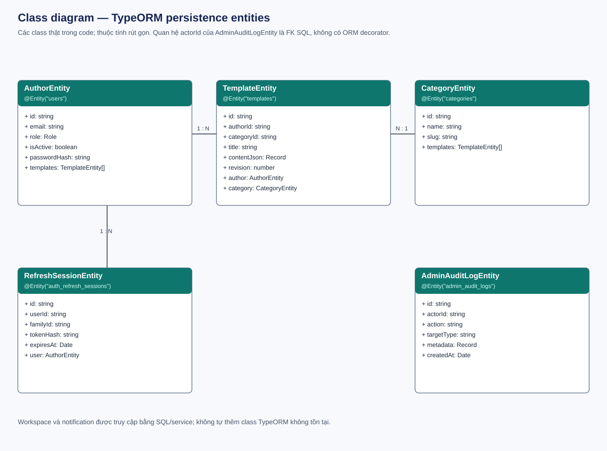

1. Entity Relationship Diagram
PK: khóa chính; FK: khóa ngoại; ?: có thể NULL. Mũi tên đi từ bảng chứa FK tới bảng được tham chiếu. Sơ đồ ảnh chỉ biểu diễn các FK trọng tâm; bội số và các quan hệ bổ sung nằm trong mã Mermaid/chú giải.


2. Class diagram của TypeORM entities
Các class trong hình tồn tại ở mã nguồn. Bảng workspace và notifications được xử lý bằng SQL/service, không được tự ý thể hiện thành các class entity TypeORM.


Ghi nhớ khi vấn đáp
ERD biểu diễn bảng, khóa và quan hệ ở tầng dữ liệu. Class diagram biểu diễn class và liên kết được khai báo trong mã. Hai sơ đồ cùng đề cập dữ liệu nhưng không bắt buộc có quan hệ một bảng tương ứng một class.
template_follows và workspace_members là bảng nối nhiều-nhiều với khóa chính ghép. message_outbox lưu payload sự kiện; template ID trong payload không phải khóa ngoại trực tiếp. Điều kiện chống thông báo trùng là partial unique index, không phải khóa chính.